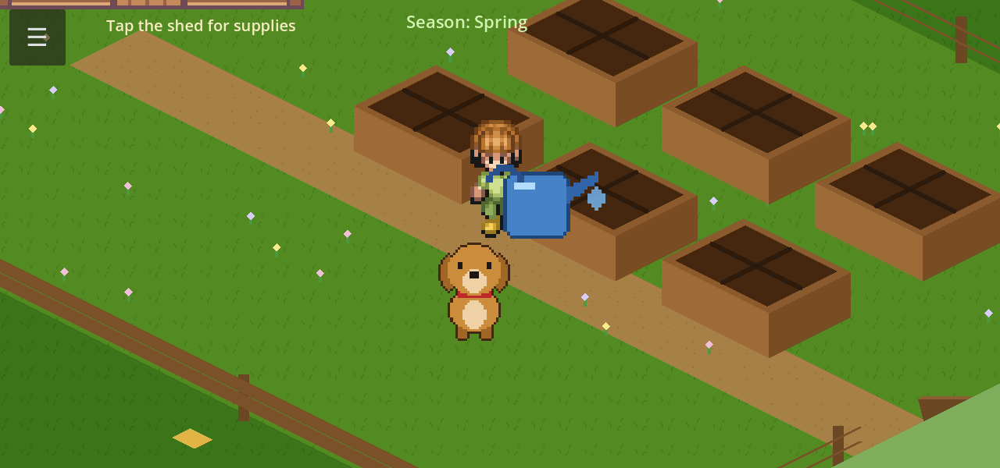
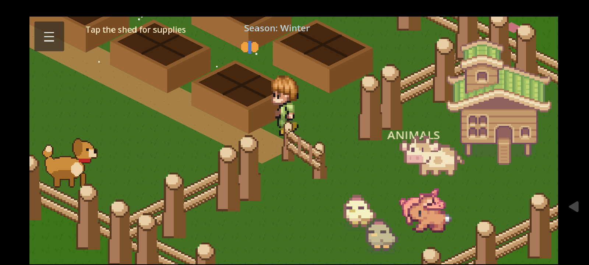
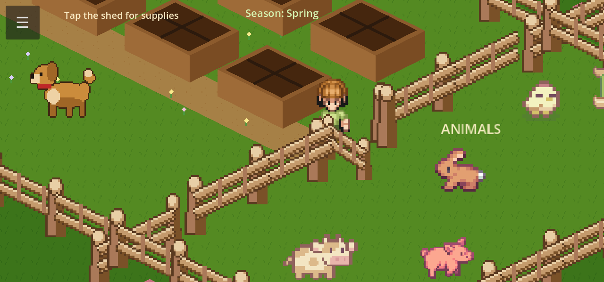
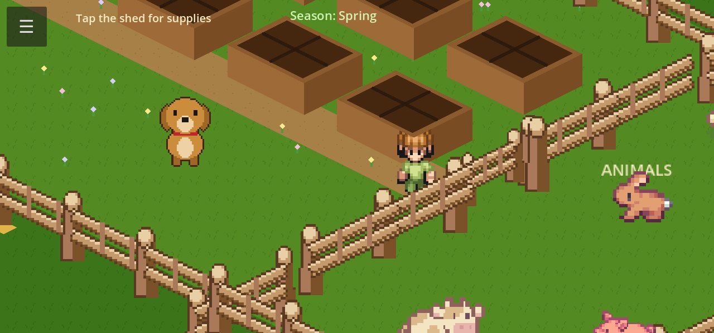
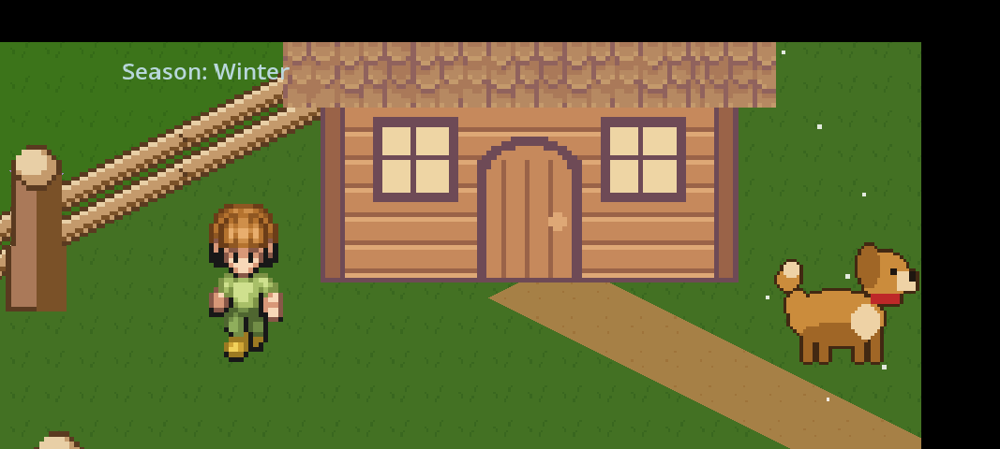
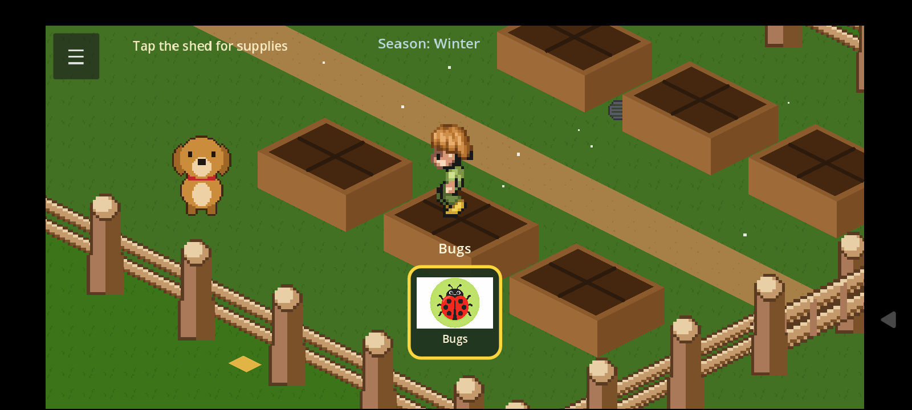
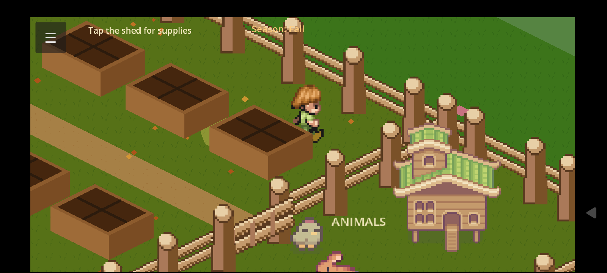

What is a seed?
Sample clip — what a seed is and how planting starts.
Game 2 · Star Learner
A calm isometric farm for a young gardener: pick seasonal seeds at the shed, tend six beds, visit animals at the fence, and unlock knowledge stars with short offline gardening videos. Plant, water, grow, harvest — and learn along the way.
Garden Explorer is a wide-landscape 2D isometric garden built for one finger. The left side holds the shed — seed store and harvest storage. The middle is a 2×3 grid of raised beds (six beds, four plant slots each). The right is a fenced animal pen. Seasons advance on their own clock; each season opens a different seed subset, so the garden keeps changing without menus or reading.
Tap the shed to pick a seed, tap a bed slot to plant, then water when thirst icons appear. Plants grow with water and time; harvest when ready and store the crop back at the shed. Animals and bugs live on the farm too — tap a cow, chicken, butterfly, or ladybug for a short spoken aside. Twelve knowledge stars live in the hamburger menu (top-left): some are always visible (dim until collected); others reveal as the child plants, waters, sprouts, harvests, or changes season. Tap a star for a short educational clip with baked ElevenLabs narration.
Built in Godot 4.3 (Mobile renderer), offline-first: clips and voice-over ship on the device. On a Star Learner kiosk it is the garden tile in the curated landscape catalog — no store, no browser, just the farm.







Three in-game clips from the garden library — the same offline educational videos a child finds through stars, plants, animals, and bugs.
Sample clip — what a seed is and how planting starts.
Sample clip — butterflies visiting the garden.
Sample clip — chickens in the animal pen.